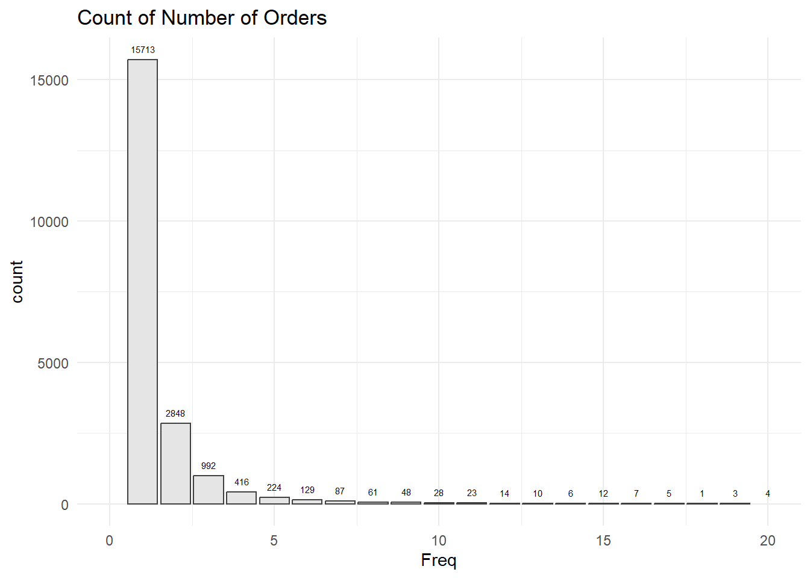

pacman::p_load(ggstatsplot,plotly, patchwork, hrbrthemes, ggridges, ggrepel, tidyverse, ggpubr, scales, colorspace, ggdist)Project Analysis - Customer Transaction Data
1. Getting Started
First loading the packages:
1.1 Reading the Data
df <- read_csv("data/updated_data.csv")Not sure why, but there are empty columns being loaded. We will remove that. Additionally, we will expand the columns to include the measure values in separate columns, e.g. Retail Price etc.
df <- df %>%
select(-18:-29)
df_transformed <- df %>%
pivot_wider(names_from = `Measure Names`, values_from = `Measure Values`)Standardise the typing format under Category Description.
df_transformed <- df_transformed %>%
mutate(`Category Description` = case_when(
str_detect(`Category Description`, "Home collection") ~ "Home Collection",
str_detect(`Category Description`, "SKIN CARE") ~ "Skin Care",
str_detect(`Category Description`, "Skin care") ~ "Skin Care",
str_detect(`Category Description`, "ORAL CARE") ~ "Oral Care",
TRUE ~ `Category Description`
))2.1 EDA
Let’s do some initial statistic counting first to understand the data.
2.1 Number of Rows with Net Price = 0 / Customer who received Samples
num_zeros <- df_transformed %>%
filter(`Net Price (SGD)` == 0)We have 40,049 observations with net price = 0. Based on the product description, these looks like sample products that are given with the purchase.
Let’s do a count of the number of customers and their IDs who received these samples.
samples_per_customer <- num_zeros %>%
group_by(Customer) %>%
summarise(samples_received = n_distinct(`Order No`))From the data - we have 11,329 unique customers who received these samples.
Quick visualisation on the number of samples per customers:
ggplot(data=samples_per_customer,
aes(x = samples_received)) +
geom_bar(bins=1,
boundary = 100,
color="grey25",
fill="grey90") +
theme_minimal() +
xlim(0,5) +
ggtitle("Samples Per Customers")Can see that most of them only received 1 samples.
We remove these samples from the main dataset:
df_filtered <- df_transformed %>%
filter(`Net Price (SGD)` != 0) %>%
filter(`Retail Price (SGD)` != 0)
df_filtered <- df_filtered %>%
mutate(per_discount = (`Item Discount (SGD)` / `Retail Price (SGD)` * 100)) %>%
mutate(per_discount = ifelse(is.infinite(per_discount), NA, per_discount))2.2 Checking Customer Data
2.1.1 Number of Customers
First, lets see how many unique customers are there.
num_unique_customers <- df_filtered %>%
distinct(Customer, `Customer Gender`, Country) %>%
mutate(`Customer Gender` = factor(`Customer Gender`),
Country = factor(Country))
summary(num_unique_customers) Customer Customer Gender Country
Min. :1000350 F :8782 MY: 3618
1st Qu.:2116865 M :2881 SG:17046
Median :3471894 Unknown:9001
Mean :3243219
3rd Qu.:4291294
Max. :5230122 The data comprise 20664 unique customer ID.
Of which, we have 11,663 customers with gender. From these data, we have 8782 Female Customers and 2881 Male Customers.
2.1.2 Number of Orders and Number of Products
# Calculate the total number of products purchased by each customer
products_per_customer <- df_filtered %>%
group_by(Customer) %>%
summarise(total_num_products = sum(Qty))
summary(products_per_customer) Customer total_num_products
Min. :1000350 Min. : 1.00
1st Qu.:2116865 1st Qu.: 1.00
Median :3471894 Median : 2.00
Mean :3243219 Mean : 9.73
3rd Qu.:4291294 3rd Qu.: 3.00
Max. :5230122 Max. :84799.00 # Calculate the number of orders made by each customer
orders_per_customer <- df_filtered %>%
group_by(Customer) %>%
summarise(Freq = n_distinct(`Order No`),
Monetary = sum(`Net Price (SGD)`, na.rm = TRUE))
summary (orders_per_customer) Customer Freq Monetary
Min. :1000350 Min. : 1.000 Min. : 1
1st Qu.:2116865 1st Qu.: 1.000 1st Qu.: 158
Median :3471894 Median : 1.000 Median : 312
Mean :3243219 Mean : 1.597 Mean : 1012
3rd Qu.:4291294 3rd Qu.: 1.000 3rd Qu.: 556
Max. :5230122 Max. :457.000 Max. :3599713 For the study here - I just define Freq as the number of orders within the 2 years period, i.e. even if within the same month or week.
Code
head(products_per_customer[order(products_per_customer$total_num_products, decreasing = TRUE), ], 30)# A tibble: 30 × 2
Customer total_num_products
<dbl> <dbl>
1 3558061 84799
2 4497811 15530
3 1117958 10630
4 3264222 6452
5 1678261 1428
6 2062441 1390
7 1199830 1108
8 1664656 720
9 2011870 700
10 1900810 670
# ℹ 20 more rowsCode
head(orders_per_customer[order(orders_per_customer$Monetary, decreasing = TRUE), ], 30)# A tibble: 30 × 3
Customer Freq Monetary
<dbl> <int> <dbl>
1 3558061 20 3599713.
2 1117958 457 2505904.
3 4497811 14 875207.
4 3264222 21 679898.
5 1678261 22 349773.
6 1494594 57 260759.
7 4498726 9 189137.
8 1199830 50 158623.
9 2126742 60 114673.
10 2603534 45 108388.
# ℹ 20 more rowsWe may need to filter out these customers subsequently as they do not represent the average customers - also to find out where are they from.
ggplot(data=orders_per_customer,
aes(x = Freq)) +
geom_bar(bins=20,
boundary = 100,
color="grey25",
fill="grey90") +
theme_minimal() +
geom_text(stat='count', aes(label=..count..), vjust=-1, size = 2) +
xlim(0,20) +
ggtitle("Count of Number of Orders")
2.1.3 Calculating Recency
I calculated recency based on the last day of order and the number of days in between then and 14 May 24.
df_dates <- df_filtered %>%
mutate(`Document Date` = as.Date(as.character(`Document Date`),format='%d/%m/%Y'))
date <- as.Date("14/May/2024", format="%d/%b/%Y")
a <- as.numeric(date)
recency_per_customer <- df_dates %>%
group_by(Customer) %>%
summarise(recency = a - as.numeric(max(`Document Date`), format="%d/%m/%Y"))
summary(recency_per_customer) Customer recency
Min. :1000350 Min. :135.0
1st Qu.:2116865 1st Qu.:267.0
Median :3471894 Median :477.0
Mean :3243219 Mean :473.2
3rd Qu.:4291294 3rd Qu.:667.0
Max. :5230122 Max. :864.0 2.1.4 Checking the mode of purchase and types of products
First, to check the summary of the category description.
summary(as.factor(df_filtered$`Category Description`)) Bath and Body Beauty Accessories Fashion Accessories Fragrance
7957 283 129 33688
Haircare Home Collection Make up Oral Care
2670 9131 1419 252
Skin Care
10196 # Group by customers and create indicator columns
df_indicators <- df_filtered %>%
group_by(Customer) %>%
reframe(
retail = ifelse("Retail" %in% `Sales Channel`, "Yes", "No"),
third_party = ifelse("3rd Party Marketplaces" %in% `Sales Channel`, "Yes", "No"),
corp = ifelse("Corp Sales" %in% `Sales Channel`, "Yes", "No"),
website = ifelse("eCommerce Stores" %in% `Sales Channel`, "Yes", "No"),
fragrance = ifelse("Fragrance" %in% `Category Description`, "Yes", "No"),
skincare = ifelse("Skin Care" %in% `Category Description`, "Yes", "No"),
bathbody = ifelse("Bath and Body" %in% `Category Description`, "Yes", "No"),
home = ifelse("Home Collection" %in% `Category Description`, "Yes", "No"),
haircare = ifelse("Haircare" %in% `Category Description`, "Yes", "No"),
makeup = ifelse("Make up" %in% `Category Description`, "Yes", "No"),
oral = ifelse("Oral Care" %in% `Category Description`, "Yes", "No"),
beauty_acc = ifelse("Beauty Accessories" %in% `Category Description`, "Yes", "No"),
fashion_acc = ifelse("Fashion Accessories" %in% `Category Description`, "Yes", "No")
) 2.1.5 Looking across brands
summary(as.factor(df_filtered$`Brand Description`)) 3LAB SKINCARE Masion de L\x92asie ACQUA DI PARMA
3 78 5359
AMOUAGE ANNICK GOUTAL AVEDA
1048 1064 949
BJORK AND BERRIES BKR WATER BOTTLES BOUCHERON
946 36 28
BVLGARI BY KILLIAN BY TERRY
544 1727 1103
BYREDO FRAGRANCE CHOPARD CIRE TRUDON CANDLE
5491 2 1020
COMME DES GARCONS CREED D.S. & DURGA
36 2781 496
DIPTYQUE EVE LOM FLORAIKU
7946 663 80
FORNASETTI FREDERIC MALLE GINORI 1735
5 2283 65
HERMES HERMETICA JACK BLACK
963 40 676
JUNGSAEMMOOL BEAUTY Kayali LA BRUKET
5 301 1701
LEONOR GREYL LOEWE MAISON CRIVELLI
798 344 393
MAISON FRANCIS KURKDJIAN MALIN + GOETZ MATIERE PREMIERE
7818 2789 70
MEMO MILLER HARRIS MONCLER FRAGRANCE
739 46 371
OLAPLEX OMOROVICZA PENHALIGON
225 45 3532
PMD Beauty POLA Santa Maria Novella
13 37 484
SERGE LUTENS SLIP TALIKA
1104 247 675
THE ORDINARY THREE Valeur Absolue
7113 197 48
VAN CLEEF & ARPEL VERSO SKINCARE vVARDIS
882 64 252 df_filtered <- df_filtered %>%
mutate(
`Brand Description` = if_else(`Brand Description` == "Masion de L\x92asie", "Masion de L",
if_else(`Brand Description` == "MALIN + GOETZ", "MALINGOETZ.",
`Brand Description`))
)df_brands <- df_filtered %>%
pivot_wider(names_from = `Brand Description`, values_from = `Qty`) %>%
select(Customer, 23:76)
df_brands[is.na(df_brands)] <- 0df_brand1 <- df_brands %>%
group_by(Customer) %>%
summarise(across(1:54, ~sum(.)))2.1.6 Looking at the Discounts
We have earlier created the percentage discount per orders. Seems weird - but there is one with a discount of more than 100%. So we will filter that out.
summary(df_filtered$per_discount) Min. 1st Qu. Median Mean 3rd Qu. Max.
0.000 0.000 0.000 2.893 0.000 232.000 df_filtered <- df_filtered %>%
filter(per_discount <= 100)Plot the range of the discount:
ggplot(df_filtered, aes(x = per_discount)) +
geom_histogram(binwidth = 10, fill = "lightblue", color = "black") +
labs(title = "Histogram of Discount", x = "Discount", y = "Frequency") +
theme_minimal ()df_filtered <- df_filtered %>%
mutate(discount_category = cut(per_discount, breaks = c(-Inf, 0, 10, 20, 30, 40, Inf), labels = c("no_disc", "0_10", "10_20", "20_30", "30_40", "40_abv")))
df_discount <- df_filtered %>%
pivot_wider(names_from = discount_category, values_from = `Qty`) %>%
group_by(Customer) %>%
summarise(across(24:29, ~sum(.)))We also plot the count of orders and their discount type:
ggplot(df_filtered, aes(x = discount_category)) +
geom_bar(fill = "lightblue", color = "black") +
labs(title = "Count of Orders by Discount Category", x = "Discount", y = "Frequency") +
ylim(0,70000) +
geom_text(stat='count', aes(label=..count..), vjust=-1) +
theme_minimal()df_discount <- df_discount %>%
mutate(across(2:7, ~ifelse(is.na(.), "No", ifelse(. > 1, "Yes", "No"))))df_discount <- df_discount %>%
mutate(discount = ifelse(rowSums(across(2:7, ~ . == "Yes")) > 0, "Yes", "No"))ggplot(df_discount, aes(x = discount)) +
geom_bar(fill = "lightblue", color = "black") +
labs(title = "Number of Customers who ordered with any discount", x = "Discount", y = "Frequency") +
ylim(0,12000) +
geom_text(stat='count', aes(label=..count..), vjust=-1) + # Use stat='count' to label counts
theme_minimal()
3. Building the Customer Profile
left_joined_df <-
left_join(orders_per_customer, products_per_customer, by = "Customer") %>%
left_join(recency_per_customer, by = "Customer") %>%
left_join(samples_per_customer, by = "Customer") %>%
left_join(num_unique_customers, by = "Customer") %>%
left_join(df_discount, by = "Customer") %>%
left_join(df_indicators, by = "Customer")
left_joined_df[is.na(left_joined_df)] <- 0write.csv(left_joined_df, "data/customer_profile.csv", row.names = TRUE)Plot the monetary value of Customers who are repeat customers vs those non-repeat
df_summary <- left_joined_df %>%
mutate(freq_group = ifelse(Freq == 1, "Frequency 1", "Frequency > 1")) %>%
group_by(freq_group) %>%
summarize(total_monetary = sum(Monetary))
# Plot the summarized data
ggplot(df_summary, aes(x = freq_group, y = total_monetary, fill = freq_group)) +
geom_bar(stat = "identity", color = "black") +
labs(title = "Total Monetary Value by Customer Frequency",
x = "Customer Frequency",
y = "Total Monetary Value (in Millions)") +
scale_y_continuous(labels = scales::comma_format(scale = 1/1000000, suffix = " M")) +
theme_minimal()Patterns of Customer using Discount
# Summarize the data by counting the number of "Yes" values in the discount column
df_summary1 <- left_joined_df %>%
mutate(freq_group = ifelse(Freq == 1, "Frequency 1", "Frequency > 1")) %>%
group_by(freq_group) %>%
summarize(yes_count = sum(discount == "Yes"))
# Plot the summarized data
ggplot(df_summary1, aes(x = freq_group, y = yes_count, fill = freq_group)) +
geom_bar(stat = "identity", color = "black") +
labs(title = "Count of 'Yes' in Discount by Customer Frequency",
x = "Customer Frequency",
y = "Count of 'Yes' in Discount") +
theme_minimal()Clustering using RFM
- done on SAS Viya